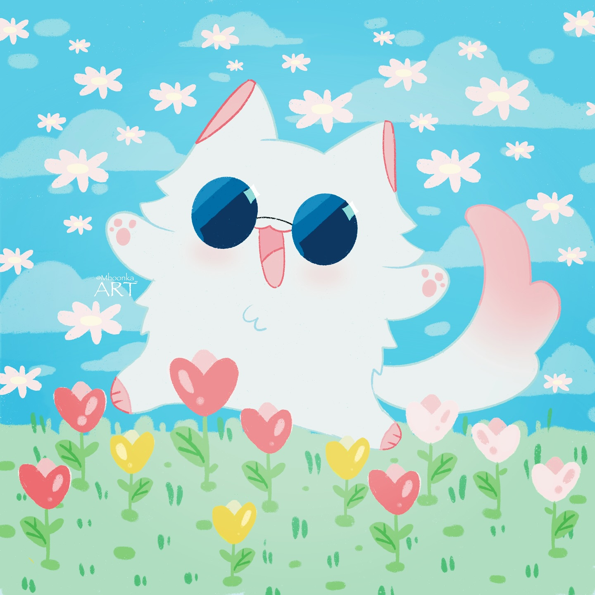

NOTE BOOK

DEDICADO A AGUSITA

★
★
hecho por fernan jeje :3
No sé exactamente cómo empezar estas palabras sin que se me enrede el alma, pero necesito decirte lo que llevo dentro desde hace tiempo. Desde que llegaste a mi vida, algo cambió en mí. No solo ocupas mis pensamientos, sino que llenas mi corazón de una forma que nunca antes había sentido. Hay algo en ti que me desarma y me reconstruye al mismo tiempo. Tu sonrisa tiene el poder de calmar mis días más difíciles, y tu voz, aunque la escuche solo un momento, me acompaña como un eco suave que me recuerda que no estoy sola en este mundo. Lo que siento por ti algo tan honesto.

Por más que solo seamos amigos sé que no somos solo eso y que capaz seamos más que eso, y ojala algún día ya no ser solo tu amigo pero es algo complicado así que mejor solo me conformo con ser solo tu amigo, pero eso no quita el hecho de que te voy a amar cuidar y estar contigo siempre, seguiré amándote en silencio si es necesario… .
Quiero aprovechar esta carta para decirte lo mucho que te amo y te aprecio, de lo feliz que me haces, y también agradecerte todos los momentos bonitos que pasamos, agradecerte también por siempre soportarme, gracias por estar a mi lado y una vez mas te amo mi chikilla…💖💗. Eres una niña divina, que se esfuerza cada día más, que siempre intenta darle ánimos a los demás, eres la mejor hija, amiga, novia del mundo, admiro quien eres, amo tus lindos sentimientos y eso de que seas sensible es la parte más linda y tierna de ti, simplemente amo todo de ti :3
Feliz aniversario, mi princesita hermosa :3.
Con cariño,
FERNAN.